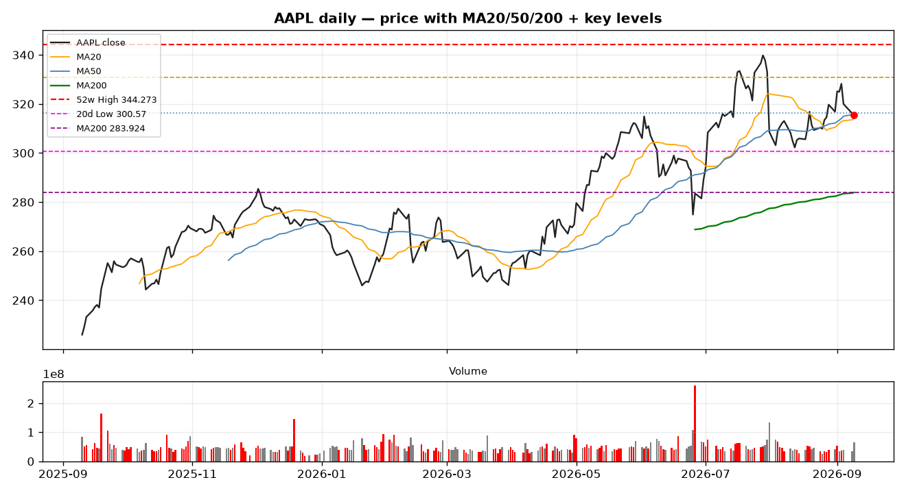

Apple's Foldable Debut Lands Flat — A $1,999 Halo Product, A Market That Shrugged Sahm Research
Technical + fundamental + catalyst read · data as of 2026-09-09 close · English TV post draft
Apple's first foldable — the iPhone Duo — is real, it's premium, and it's the marquee moment of new CEO John Ternus' first event. The stock's reaction was the opposite of a victory lap: AAPL closed -0.28% at 315.34 on event day (Sep 9), after trading as much as ~2% lower intraday — at the worst point roughly $90B of market cap evaporated — before clawing back to a modest loss. After-hours it ticked up +0.67%. The chart below frames the setup.

AAPL daily — price with MA20/50/200 + key levels (344.57 52-week high, 330.81 20-day high, 316.47 MA50, 300.57 20-day low, 284.35 MA200). Reference chart; on TradingView build it in-chart per the drawing memo.
The technical tape
The setup, not the keynote, is the story. AAPL set its 52-week high of 344.57 on July 29, then sold off ~10% from that high on the July 31 earnings day (closing 308.91) and drifted through August in a 300–330 range. It walked into the September 9 event already ~8% below the high — and the event itself closed essentially flat (-0.28%, at 315.34). So the 8.5% gap to 344.57 is a ceiling that predates the launch, not a reaction to it. Price now sits on the 20-day MA (314.06) and just under the 50-day MA (316.47): pausing at resistance, not breaking out.
- Close 315.34 — on the MA20 (314.06), ~0.4% below the MA50 (316.47), and a solid 11% above the MA200 (284.35). The long-term trend is intact; the short-term momentum has cooled.
- RSI(14) = 48.4 — dead neutral. No overbought froth to unwind, but no momentum thrust either.
- MACD 1.80 vs signal 1.37, histogram +0.43 — still positive, but the gap is thin and the pullback off the highs says the bullish push is losing steam.
- ATR(14) = 7.39 (~2.3% of price) — the name swings about 2% a day, so size stops to the range.
- The last five sessions: 324.96 → 328.21 → 319.97 → 316.22 → 315.34. A brief pop to 328, then a steady fade into and through the event — no pre-event surge to the highs.
The levels that matter: resistance at 330.81 (20-day high) and 344.57 (52-week high) — the event failed to reclaim either. On the downside, support is the 300.57 shelf (20-day low / psychological 300), then the real line in the sand: the MA200 at 284.35, which defines whether the long-term uptrend is still standing.
The fundamental dynamic
Strip out the event noise and the business is still a cash machine. As of the latest data:
- Market cap ~$4.6T; TTM revenue ~$467B, net income ~$129B.
- Gross margin ~48.6%, net margin ~27.6% — pricing power intact.
- Latest fiscal quarter (Q3 FY2026, ended Jun 2026) product revenue $109.4B (standalone).
- Valuation: forward P/E ~33x, trailing ~36x, PEG ~1.26 — full, but not disconnected from a franchise that earlier this year guided 14–17% revenue growth. The $100B buyback authorized at WWDC26 underwrites the floor.
The bull case on Duo is real but unproven: Deepwater's Gene Munster frames it as potentially Apple's first broadly-demanded new consumer product since AirPods — a 5% slice of total revenue, 8–12% of iPhone revenue, 20M+ units in year one, partly cannibalizing the Pro Max. The bear case is equally tidy: at $1,999–$3,199 it is a halo product aimed at the top of the market, and Forrester warns it risks becoming a "high-priced accessory" — an identity label, not a volume engine — echoing the Vision Pro ($3,699) miss.
The narrative the market is wrestling with
- The de-rating predates the keynote. AAPL was already ~8–12% below its July 29 peak (344.57) after the late-July earnings sell-off, and faded into September. The event didn't trigger a "sell-the-news" dump — it just failed to recover the lost ground, closing flat (-0.28%).
- Supply, not demand, is the 2026 constraint. Counterpoint pegs 2026 shipments at a capped ~6M units (vs optimistic 10–20M forecasts) — a slow ramp limits the near-term revenue contribution.
- The China AI gap. The new Siri / on-device AI ships English-beta first; Chinese-language and China-feature support has no timeline. In Apple's largest market, the headline AI story is "not yet."
- Old models also got more expensive. Across-the-board price hikes (blamed on memory costs) landed as a "sticker shock" alongside the Duo — a margin win, but a consumer-relations risk.
- Macro, not just Apple. Event day the tape was risk-off for tech: Brent pushed above $100 on Middle East tension, energy led, and the Nasdaq fell 0.64% (GOOGL -2.28%, AMZN -1.78%). AAPL's -0.28% actually outperformed the index and its megacap peers — "unimpressed" was partly the macro, not Apple-specific panic.
What we are watching (observation, not a call)
- Whether AAPL can reclaim 330.81, then 344.57 — a close back above the 52-week high would say the market believes the Duo thesis.
- The 300 / 284 shelf — a hold above the MA200 keeps the long-term uptrend; a weekly close below it changes the regime.
- Oct 23 launch sell-through and early Duo units — the first hard data on whether $1,999 is a price or a ceiling.
- Any China AI timeline — the single biggest swing factor for the growth narrative in that market.
Not financial advice. This is Sahm Research sharing a technical, fundamental and catalyst read, not a recommendation to buy or sell.